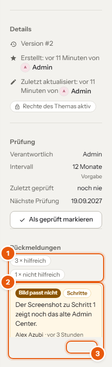
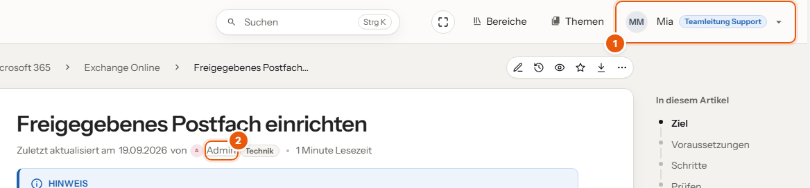

Leserinnen und Leser melden, was an einem Artikel nicht mehr stimmt. Die Redaktion und alle, die den Artikel bearbeiten dürfen, sehen die Hinweise direkt am Artikel und haken sie ab. Außerdem steht hier, wie Titel und Profilbilder neben den Namen entstehen.

Die Rückmeldungen stehen rechts unter „Details“. Sichtbar sind sie nur für Personen, die den Artikel bearbeiten dürfen.
Korrigier den Artikel zuerst und hak den Hinweis danach ab. Schreib ins Änderungsprotokoll, was du geändert hast, dann ist die Korrektur in den Versionen nachvollziehbar.
Jeder Artikel wird in festen Abständen geprüft, damit nichts unbemerkt veraltet. Verantwortlich ist die Person, der der Artikel gehört – anfangs die, die ihn angelegt hat. Ändern lässt sich das unter Rechte beim Artikel.
Ist die Frist abgelaufen, sehen alle unter dem Titel Prüfung überfällig, Angaben mit Vorsicht nutzen. Nach einer Prüfung steht dort Geprüft am ….
Standard sind 12 Monate. Mit dem Schlagwort Prüfintervall änderst du das: am Thema für alle Artikel darin (zum Beispiel 6 für Kundenwissen), am Artikel nur für diesen. nie schaltet die Prüfung ab, etwa für Protokolle.
Speichern allein zählt nicht als Prüfung. Ein korrigierter Tippfehler heißt nicht, dass der Rest noch stimmt.

theme/fundus/titel.php. Die Farbe richtet sich nach der Stufe: Leitung schwarz, Senior blau, Junior türkis, Azubi grün, sonst grau.Titel und Rollen sind zwei verschiedene Dinge: Der Titel ist nur eine Beschriftung. Was jemand sehen und bearbeiten darf, steuert allein die Rolle aus dem Firmenkonto, siehe „Personen und Konten“.